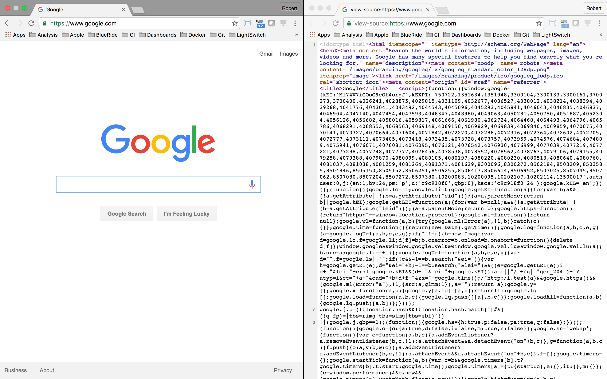
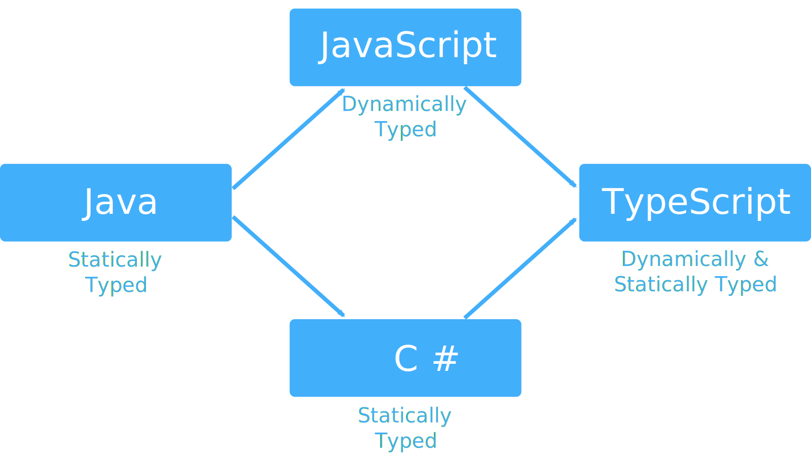

The State of JavaScript
Quirks and Challenges
Popularity
Maturity
Transpilation
Quirks and Challenges
Wat
A lightning talk by Gary Bernhardt from CodeMash 2012
The Birth & Death of JavaScript
A talk by Gary Bernhardt from PyCon 2014
https://www.destroyallsoftware.com/talks/the-birth-and-death-of-javascript
Callback Hell
#hadoukindentation #if #andthatsaBIGif pic.twitter.com/suIVXY9u0W
— cloudshark ⛅ (@cloudshark) September 13, 2016
ES3-ES5—Circa 2008
Most programming languages contain good and bad parts, but JavaScript has more than its share of the bad, having been developed and released in a hurry before it could be refined...
Considered the JavaScript expert by many people in the development community, author Douglas Crockford identifies the abundance of good ideas... Unfortunately, these good ideas are mixed in with bad and downright awful ideas...
The real beauty? As you move ahead with the subset of JavaScript that this book presents, you'll also sidestep the need to unlearn all the bad parts.
Popularity
Maturity
Transpilation
"JavaScript is Assembly Language for the Web...and That's OK"
The subject of three blog posts by Scott Hanselman starting in 2011
Known Transpiled Languages
TypeScript Origins
Language Designer
Video
Language Designer
Anders Hejlsberg

Borland Early Years
Turbo Pascal (released in the early '80s)
- Tool: Was the first IDE
- Tool: Generated small, fast, portable binaries
- Language: Object-oriented
Borland Later Years
Delphi (released in the mid ‘90s)
- Tool: One of the first examples of a RAD tool (IDE & visual window designer)
- Language: Added properties, events, and metaclasses as first-class concepts
- Language: Supported class and interface polymorphism along with interface delegation
- Language: Supported virtual and message-based method dispatching
- All these features combined to make both Win32 and COM programming much easier
Microsoft Early Years
Visual J++ and WFC
- Created a single framework for Java + Win32 + DHTML
Microsoft Middle Years
C♯ (released in the early ‘00s)
- 1.0: Unified object model—everything descends from
Object - 2.0: Nullable value types—value types with no value; e.g.
int? x = null; - 2.0: Generics—type parameters; e.g.
List<T> - 2.0: Iterators—auto-generation of
IEnumerable<T>viayield return x; - 3.0: Lambdas—a.k.a. arrow functions; anonymous, inline closures
- 3.0: LINQ—declarative algorithms using function composition and chaining with an optional SQL-like syntax
- 4.0: Dynamic binding—Natural COM and dynamic language interop via
dynamic - 5.0: Async/Await—language-integrated continuation passing style asynchrony
TypeScript Stemma
What's New in TypeScript
A Talk by Anders Hejlsberg at Build 2017
https://channel9.msdn.com/Events/Build/2017/B8088TypeScript in the Wild
Yes, TypeScript can be used with React and Vue, too.
This Presentation
Tech Used In This Presentation
- Both
- TypeScript programming language
- NPM package manager
- Client
- Browser + ES5 runtime environment
- SystemJS module loader
- Reveal.js presentation framework
- D3.js AJAX requestor and DOM manipulator
- D3-Cloud word cloud visualizer
- Highlight.js code formatter
- Server
Considerations
Pros and Cons
Alternatives
Walled Garden Design
Pros and Cons
| Category | Cons | Pros |
|---|---|---|
| Configuration |
|
|
| Type Definitions |
|
|
| Transpilation |
|
|
Alternatives
Code
Examples
Getting Started
Getting Started
Examples
Remember This?